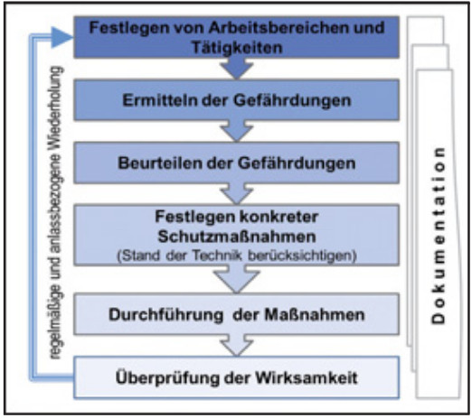
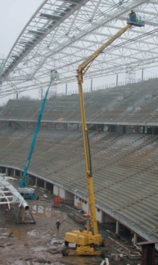
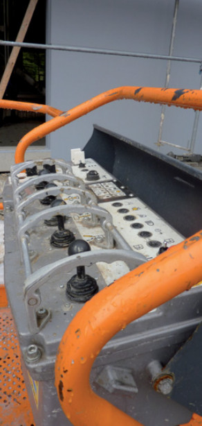
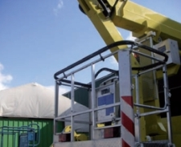
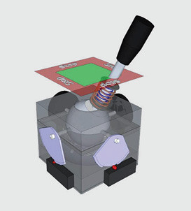

Unter Berücksichtigung von Arbeitsstätten, Arbeitsplätzen, Maschinen und Anlagen sind in der Gefährdungsbeurteilung die
zu beachten.
Die Gefährdungsbeurteilung (Bild 6-1) ist zu dokumentieren (ArbSchG, BetrSichV, BGV A1).
|
Achtung! Die Durchführung einer Gefährdungsbeurteilung hat nur dann das Ziel erreicht, wenn hierzu Schutzziele bestimmt und Maßnahmen festgelegt wurden. Regelmäßig ist die Wirksamkeit und Einhaltung der Schutzmaßnahmen zu überprüfen:
|

Wie bereits im Abschnitt 6.1 aufgeführt, ist in einer Gefährdungsbeurteilung für den Einsatz von fahrbaren Hubarbeitsbühnen auch der Einsatzort zu berücksichtigen.
So können z. B. auf Baustellen (Bild 6-2) weitaus größere Gefährdungen als im stationären Betrieb (z. B. bei einfachen handwerklichen Tätigkeiten, wie Glühlampenwechsel) vorliegen. Das heißt, der Einsatz von Hubarbeitsbühnen auf Baustellen oder ähnlichen Umgebungsbedingungen bedarf einer besonderen Planung.

Über die Festlegungen in der allgemeinen Gefährdungsbeurteilung hinaus bezieht sich die projektbezogene Gefährdungsbeurteilung u. a. auf folgende Fragen:
Insbesondere für Baustellen gilt, dass die Gefährdungsbeurteilung laufend den Anforderungen des Baufortschrittes angepasst werden muss.
Das Unfallgeschehen zeigt beim Umgang mit fahrbaren Hubarbeitsbühnen folgende Hauptgefährdungen:
Herausfallen:
Personen können durch Umfallen der Hubarbeitsbühne aus dem Arbeitskorb herausfallen.
Ursachen hierfür sind z. B.
Eine gute Planung vor dem Einsatz der Hubarbeitsbühne und die Vorbereitung der Fahrwege und Abstützflächen für die fahrbare Hubarbeitsbühne sind Grundvoraussetzungen zur Vermeidung der Umsturzgefährdung.
Der bestimmungsgemäße Einsatz unter Berücksichtigung der Betriebsanleitung, Nutzung der technischen Möglichkeiten (z. B. Abstützung unter Verwendung der Nivellierwaage/Dosenlibelle), Unterweisung und Einweisung sowie der Einsatz eines Sicherungspostens können diese Gefährdungen minimieren und sind als Maßnahmen in der Gefährdungsbeurteilung zu berücksichtigen.
Herausgeschleudert werden:
Durch Hängenbleiben an und unter Konstruktionen bzw. in Bäumen oder Überfahren von Hindernissen können Personen aus dem Arbeitskorb herausgeschleudert werden (Peitscheneffekt/Katapulteffekt).
Aufmerksame und verantwortungsbewusste Fahrbewegungen des Bedieners und die Benutzung von persönlichen Schutzausrüstungen gegen Absturz (Haltesystem) in allen Auslegerbühnen vermindern dieses Risiko.
Das Risiko eines Absturzes besteht auch beim Verlassen des Arbeitskorbes in angehobener Stellung der Hubarbeitsbühne, z. B. beim Übersteigen des Geländers in Konstruktions- und Gebäudeteile (siehe 6.4).
Ist die Hubarbeitsbühne gegenüber dem Unterwagen um mehr als 90° gedreht, kehren sich die Fahrtrichtungen am Joystick um, d. h. der bisherige Befehl Vorwärtsfahrt leitet eine Rückwärtsbewegung ein. Dies kann zu einer ungewollten Fahrbewegung führen, sodass Personen u. U. zwischen Bedienpult bzw. Geländer des Arbeitskorbes und Teilen der Umgebung eingequetscht werden.
Häufig befinden sich Teile der Umgebung (z. B. Stahlträger) im Rücken der Bedienperson. Da sie diese nicht sieht, besteht beim Drehen, Teleskopieren, Heben und Senken des Arbeitskorbes die Gefahr, dass sie mit ihrem Rücken gegen diese Teile fährt und zwischen diesen und dem Bedienpult eingequetscht wird. Bei ungeschützten Bedienelementen ist sie dann häufig nicht mehr in der Lage, diese zu bedienen und sich selber freizufahren. Einige Hersteller bieten Hubarbeitsbühnen mit Schutzausrüstungen gegen Einquetschen an, z. B.
Keinenfalls darf der Betreiber/Mieter der fahrbaren Hubarbeitsbühne in die Steuerung eingreifen und Schutzausrüstungen gegen Einquetschen anbauen. Dies obliegt ausschließlich dem Hersteller.

Weiterhin werden mechanisch wirkende Schutzleisten bzw. Ultraschallsensoren zur Absicherung der Quetschstellen angeboten (Bilder 6-4 und 6-5).
 Bild 6-4: Absicherung von Bedienpult und Geländer durch eine Abschaltleiste gegen Quetschgefahren |
 Bild 6-5: Dreistellungs-Joystick mit Panikstellung |
Unterweisung und Einweisung vor Ort mit Hinweis auf die Quetschgefahren sowie die erhöhte Aufmerksamkeit des Bedieners tragen auch zur Reduzierung dieser Gefährdungen bei.
| Aus- und Übersteigen aus dem Arbeitskorb einer Hubarbeitsbühne auf angrenzende Bauteile ist grundsätzlich nicht erlaubt. Die Hubarbeitsbühne ist ein Arbeitsplatz und keine Aufstiegshilfe, kein Aufzug und kein Kran! |
Die Bedienungsanleitungen der Hersteller sehen ein Verlassen des Arbeitskorbes nur in Grundstellung der Hubarbeitsbühne vor. Der vorgesehene Ausstieg ist dabei zu benutzen.
Trotzdem kann es gerade in Einzelfällen notwendig sein, im angehobenen Zustand in die Konstruktion einzusteigen, um einzelne kurzzeitige Montage vorgänge durchzuführen. Sollte ein Aussteigen unabdingbar sein und der Einsatz anderer Sicherungsmaßnahmen ein höheres Absturzrisiko mit sich bringen, kann dies in begründeten Ausnahmesituationen unter bestimmten Voraussetzungen zulässig sein.
Dieser begründete Einzelfall muss unter Berücksichtigung der zusätzlichen Absturz- und Quetschgefahr in einer am Einsatzort vorliegenden, gesonderten Gefährdungsbeurteilung eingearbeitet sein.
Zusätzliche dynamische Kräfte durch
Springen usw. sind beim Aus- und Einsteigen
unbedingt zu vermeiden. Die Bediener
werden für diese Situation besonders
geschult und unterwiesen. Besteht beim
Übersteigen Absturzgefahr, sichern sich
die Personen vor dem Aussteigen durch
PSA gegen Absturz an geeigneten konstruktiven
Anschlagpunkten außerhalb der
Arbeitsbühne, die durch den Arbeitgeber
festgelegt sind (Anschlagpunkte müssen
eine Stoßkraft von 7,5 kN aufnehmen können).
Es erfolgt eine durchgehende Sicherung
mit PSA gegen Absturz (Zweiseilsicherung).
Ein Rettungskonzept muss erarbeitet
werden.
Weitere Bedingungen und Empfehlungen zum Überstieg bei der D-A-CH-S (Internationale Fachgruppe ˶Absturzsicherung˝) unter www.bauforumplus.eu/absturz.